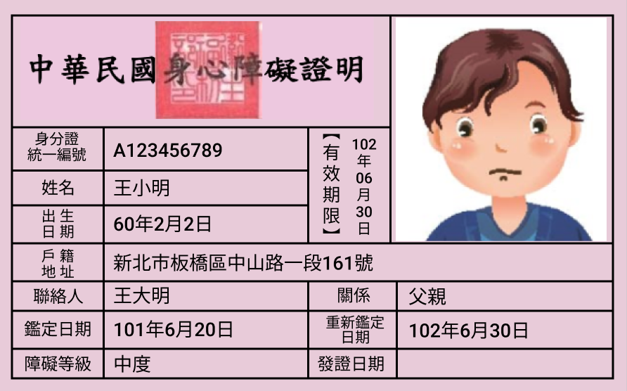

區公所臨櫃、網路
身心障礙人士 申辦福利小幫手
申請身心障礙證明

申請資格：
經衛生福利部指定醫院合格醫師鑑定，符合身心障礙證明核發標準者。有效期限為5年，換證屆滿時可申請換證。
承辦單位：新北市政府社會局身心障礙福利科
地址：新北市板橋區中山路1段161號1樓
申請流程 2
提出申請
審核申請要件
填寫身心障礙鑑定表
前往指定醫院接受鑑定
由社政單位確認資格
核定符合核發證明
戶籍區公所領取、郵寄
核定符合核發證明
戶籍區公所領取、郵寄
應檢附文件
必備文件
- 身心障礙證明申請表
- 申請人之國民身分證正背面影本（未滿14歲未請領國民身分證者檢附戶口名簿）
- 申請人之3個月內1吋半身照片3張
- 申請人印章
- 受委託申請者須檢附受委託人之個人身分證明文件及印章（或簽名）
申請人免自行檢附，系統可代為查調
- 戶籍謄本
- 社福資料
視情況提供
- 身心障礙證明（初次鑑定者免持）
- 身心障礙者因障礙情況改變，自行申請重新鑑定者；或已逾原證明重新鑑定日期，須辦理再次鑑定者，應另檢具3個月內身心障礙相關診斷證明
- 如欲申請到宅鑑定，請攜帶足資證明：
(1)全癱無法自行下床
(2)需二十四小時使用呼吸器或維生設備
(3)長期重度昏迷或
(4)其他特殊困難且經戶籍所在地縣（市）衛生局公告者，
以上情形任一之診斷證明書或身心障礙者到宅鑑定里長證明（含病歷摘要）